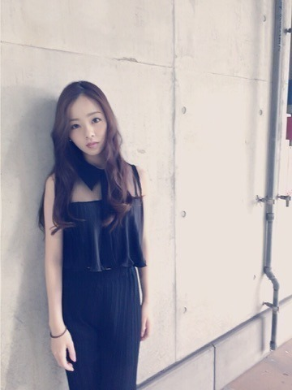
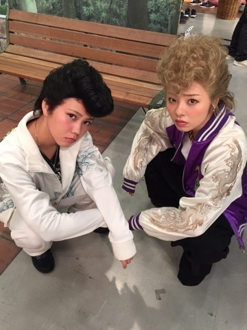
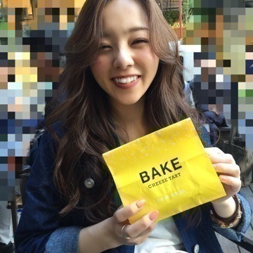

こんにちわ♡
かわむら まひろです.＊
最近は，サイン会や握手会等がありました．
来てくれた皆ありがとう♪♪
前回は，Tシャツにデニムと言うカジュアル系だったので，今回は黒...

襟まであるけど，デコルテ周辺が透けてるので，重さを感じないんです♪
後、縦にラインが入ってるので，スタイリッシュにもなりますし... この服もお気に入りですね♡ノ
はい！本題は「THE カラオケ☆バトル」です！！！♪♪
6月1日に放送されました...
あれから沢山のコメントやメッセージが届きました！
今まで私のことを知らなかった方や，色んな方の感想を伝えてくれて，久々に外でコメントを見ながら涙が出てきました^ ^
HYさんの「NAO」という曲を歌いました． 私の鼻と喉の調子が万全ではなかったことを気にかけてくれる方もいらっしゃったのですが，私は私なりに無我夢中に頑張ったし，やれることはやりました。
亜門さんからの有難いお言葉... 本当に嬉しかったです！
収録時では，他のゲストの方もコメントしてくださりました． デヴィ夫人さんに，「あなたの歌声は人の心に届く歌い方で，機械には嫌われてるかもね．笑」と言われました^ ^ この言葉すごく嬉しかったんですよね．♪♪
緊張はもちろんしましたが，前回よりは少しましだったかな．笑
ぃゃ... 緊張と制服の暑さで，汗かいてたね♡ノ
又リベンジがあるのなら，もちろん違った曲にリベンジします。 もっと簡単な曲はー？とも言われるのですが，難しい曲を練習した方が為になります♡‼︎
まぁ そおゆうことですよ．笑
はい！ という事で、、
NOGIBINGOー！！！
やんちー♡

思ってたよりヤンチーっぽくなれたので，満足。笑 このウィッグいけてるよね 笑
それに，連絡はボイスメッセージで...♡
どんどん使っていきましょう皆さん。笑

以上！！
46時間テレビよろしくね(#^.^#)
1日目の晩、チームにはD「人狼ゲーム」集合しますよ．笑笑
おやすみなさい♡